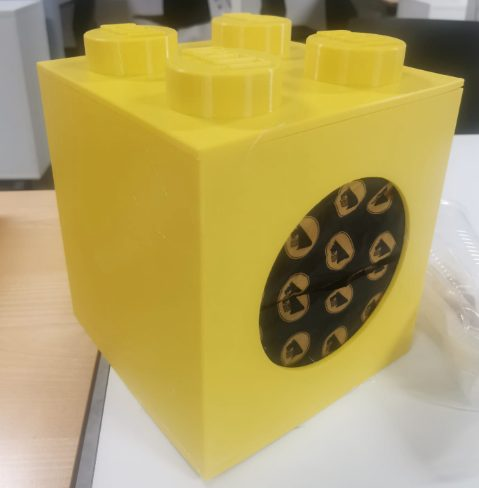
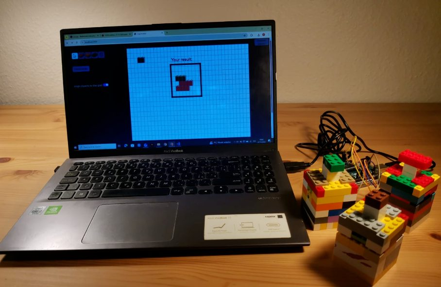
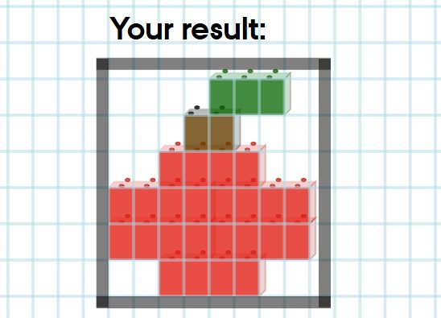

01 · Multimodal interaction course · presented at the LEGO Group headquarters
Build From Far Away
In hybrid meetings, remote participants tend to feel like spectators. In our icebreaker neither side can win alone: the person in the room feels a hidden LEGO toy with their hands, and the person online tries to recreate it on their screen.
Interaction design
Roles that depend on each other
How it plays
- On site: feel the toy inside a big yellow box, and press a physical LEGO button for each brick
- Each press drops the corresponding brick onto the remote player’s screen
- Remote: try to recreate the toy on the screen, arranging the bricks while you both talk it through
- The app automatically announces whether the recreated image is correct
Key decisions
- Nobody gets muted: prior work showed silence makes remote players feel isolated
- We can’t see colour with our hands: bricks of each colour have different shapes
- Multimodal interaction: an animation and a sound announce each new brick that appears on the screen


Findings and iteration
User study: visuals carried the game, but sound notifications needed improvements
7 / 7strongly agreed the visual cue helped them notice new bricks
6 / 7relied mainly on visuals in the on-site role
8.1–9.3mean ratings out of 10 for enjoyment and clarity
- In a noisy meeting room, several players missed the soft falling sound announcing that a new brick had appeared on the screen
- Even a simple apple was hard to rebuild
Change
Replaced the falling sound with a short melody (an earcon) that stands out from meeting noise.
